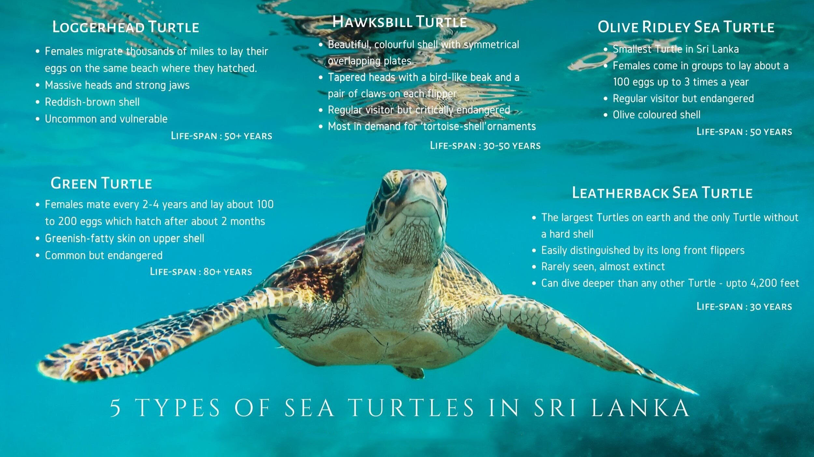
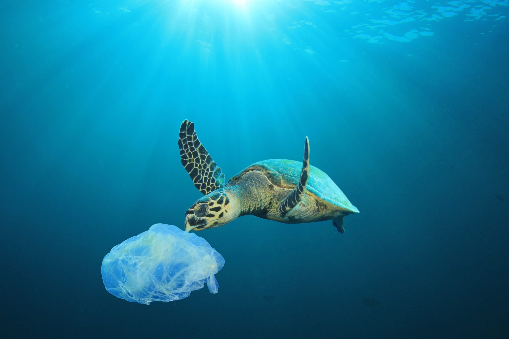
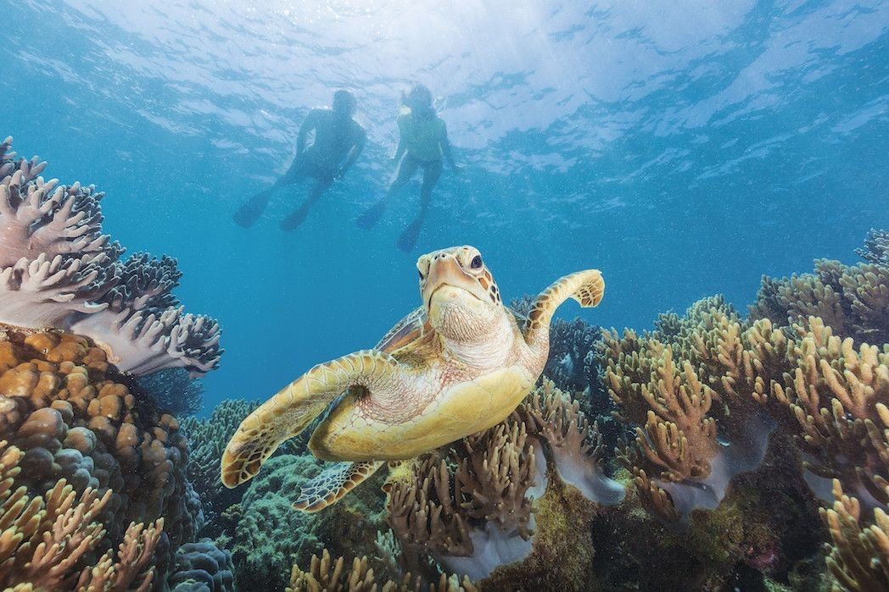

An introduction of the Sri Lankan turtle population
Population

Sri Lanka is blessed with a diverse and abundant turtle population, attracting both researchers and tourists from around the world. The island nation's coastal areas serve as important nesting grounds for several species of sea turtles, making it a vital location for their conservation.
Turtle Categories
These are most common turtle species found in Sri Lanka
These species play crucial roles in maintaining the marine ecosystem and contribute to the overall biodiversity of Sri Lanka's coastal regions.
The Green turtle, known for its large size and herbivorous diet, is one of the most abundant turtle species in Sri Lanka. It is often found grazing on seagrasses and algae near coral reefs. The Hawksbill turtle, with its distinctive pointed beak, is renowned for its beautiful shell, which is highly sought after in the illegal wildlife trade. Sri Lanka is a significant nesting site for Hawksbill turtles.
Threats to turtles
Sri Lanka's turtle population faces various threats that endanger their survival.
Nesting beaches are often disturbed by human activities,
such as coastal development and pollution.
Turtles also encounter risks from fishing gear,
entanglement in marine debris, and illegal poaching for their
meat, eggs, and shells.

Climate change, including rising sea levels and temperature,
further affects turtle habitats and nesting patterns.
Save the Turtles and Tourism

To protect and conserve these endangered species, Sri Lanka has established several turtle hatcheries and conservation projects, as mentioned earlier. These initiatives play a crucial role in safeguarding turtle eggs, raising awareness among local communities, and implementing measures to mitigate threats.
Efforts are also being made to promote sustainable tourism practices that allow visitors to experience these magnificent creatures without disturbing their natural habitats. By educating the public and fostering responsible tourism, Sri Lanka aims to ensure the long-term survival of its turtle population and preserve its rich biodiversity for generations to come.